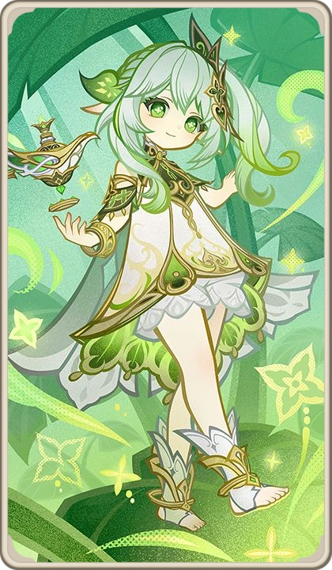

| Image | Name | Lore | Element | Region |
| Furina | Also called Foçalors, she was introduced as the over-the-top Hydro Archon. However, it was revealed to be a public persona (she is not the Hydro Archon) that she soon discards after 500 years to live a relatively humbler life as a human. | Hydro | Fontaine | |
| Yae Miko | Also called Guuji Yae. She is the overseer of the Grand Narukami Shrine, owns the Yae Publishing House, and is "Eternity"'s servant and friend. She was one of Raiden Ei's only friends that survived the disasters of the last 500 years. | Electro | Inazuma | |
|  | Nahida | Also called Lesser Lord Kusanali, she was trapped in the Sanctuary of Surasthana for 500 years until the Traveler freed her. She strives to have a stronger prescence in Sumeru since her freedom. | Dendro | Sumeru |
| Hu Tao | She is the 77th Director of the Wangsheng Funeral Parlor and is Liyue Harbor's "famous" poet. She may seem all play and no work, spending every free moment on leisure time, however, during funeral ceremonies, she shows her more dignified and quiet side. | Pyro | Liyue | |
| Chiori | A tailor renowned throughout Fontaine that is the owner of Chioriya Boutique. She is a famous fashion designer that left Inazuma during the Vision Hunt Decree and has not returned since. | Geo | Inazuma (left), Fontaine (currently residing in) |